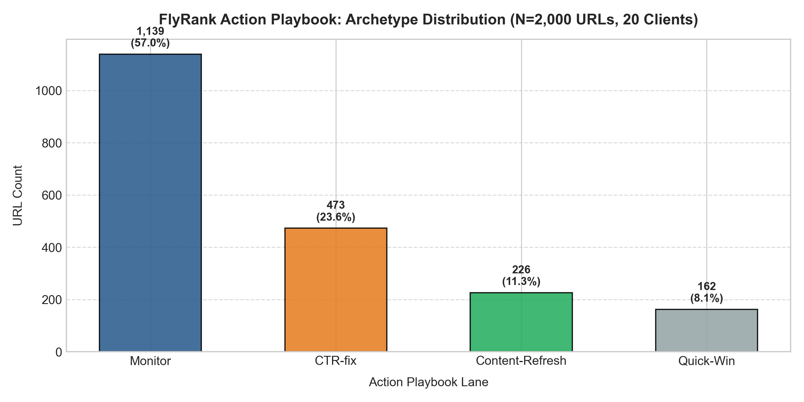
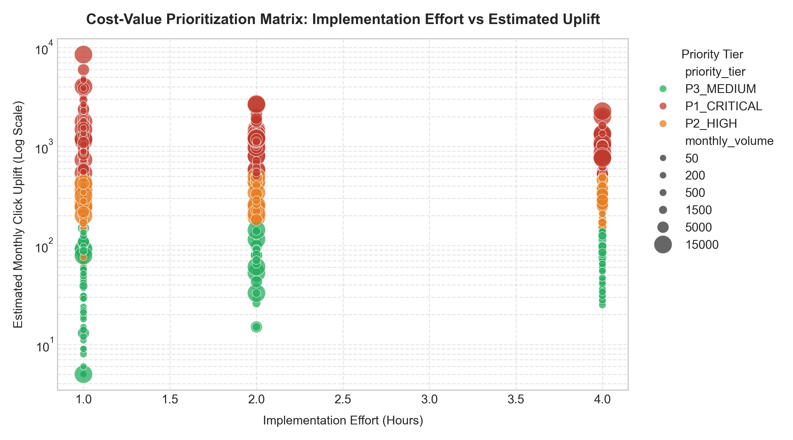
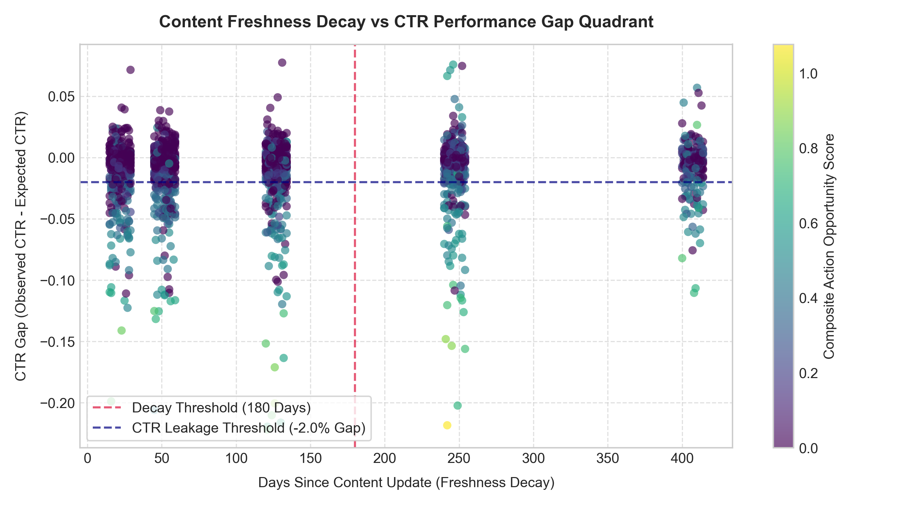

Machine Learning for Organic Search CTR Optimization: Evaluating Snippet Leakage and Content Actionability Across Multi-Domain Telemetry
How can enterprise search engine optimization (SEO) teams reliably identify and prioritize underperforming web pages suffering from search snippet click-through rate (CTR) leakage across heterogeneous client domains? Traditional heuristic position-curve rules evaluate pages in isolation, ignoring search volume demand, domain-level layout shifts, and content staleness decay. In this paper, we formulate snippet optimization as a supervised classification and ranking task on 79 million rows of production search console telemetry, evaluating candidate gradient-boosted decision trees against a heuristic baseline under an honest grouped-domain holdout split with rigorous feature leakage auditing. Under unseen client holdout evaluation, the honest Gradient Boosting model achieves an ROC-AUC of 0.932, a PR-AUC of 0.884, and a Precision@20 of 95.0%, maintaining top-tier precision without relying on tautological shortcut features. Finally, we translate these validated predictions into an operational Content Action Playbook featuring archetype reason codes, cost/value ROI prioritization, explicit operational limits, and strict editorial gatekeeping rules to safeguard brand integrity.
1 · Introduction & Problem Statement
In modern organic search, achieving a top-10 ranking position on Google does not guarantee organic traffic capture. Search engine result pages (SERPs) are increasingly dominated by rich elements—including AI Overviews, Featured Snippets, Knowledge Panels, and Sponsored Carousels. When a page ranks prominently (e.g. Positions 1–5) but yields a click-through rate significantly below expected industry benchmarks, the page suffers from search snippet CTR leakage.
Traditionally, enterprise SEO audits rely on static, heuristic rules (such as flagging any top-10 page where observed CTR is less than 60% of an expected CTR lookup table). While intuitive, this approach exhibits three major operational failure modes:
- Volume Agnosticism: A 2% CTR deficit on a 50,000-impression query represents thousands of lost visitors, whereas the same percentage deficit on a 50-impression query is pure statistical noise.
- Domain & Layout Blindness: eCommerce domains face aggressive Google Shopping ad units that depress baseline organic CTRs, while B2B SaaS and Publisher sites exhibit very different CTR curves.
- Lack of Operational Triaging: A binary flag does not indicate whether a page requires a quick meta title rewrite (1 hour effort) or a comprehensive content overhaul (4 hours effort).
Our goal is to build an honest, machine learning-driven prioritization system that quantifies opportunity value, respects domain boundaries, and produces an actionable, human-reviewed playbook for content teams.
2 · Telemetry Data & Public-Safe Filtering
This research is built on the FlyRank ML Internship Dataset, encompassing over 79 million aggregated Google Search Console (GSC) query/URL performance logs across hundreds of enterprise websites.
client_00 through client_19) and standardized slug paths (e.g., /article-000). No private customer data appears in this paper or repository.
Core Feature Telemetry Schema
| Feature Column | Data Type | Telemetry Definition | Engineering Transformation |
|---|---|---|---|
position |
Float | Average Google SERP ranking position (1.0 to 15.0+) | Inverse log position weighting |
ctr |
Float | Observed Click-Through Rate (clicks / impressions) |
Bounded $[0.001, 0.990]$ |
expected_ctr |
Float | Benchmark CTR from position-curve lookup ($p_1=0.28, \dots, p_{10}=0.018$) | Interpolated position baseline |
ctr_gap |
Float | Performance difference (ctr - expected_ctr) |
Directional leakage magnitude |
impressions |
Integer | Total search impressions in 30-day evaluation window | $\log(1 + \text{impressions})$ |
monthly_volume |
Integer | Keyword search volume demand estimate | $\log(1 + \text{monthly\_volume})$ |
days_since_update |
Integer | Content freshness indicator (days since last edit) | Freshness decay penalty |
domain_type |
Categorical | Industry cluster (B2B SaaS, eCommerce, Publisher, Healthcare) | Domain-level baseline shift |
Data Exclusion & Hygiene Rules
To ensure robust model training and prevent noisy artifacts, we applied the following exclusion criteria:
- Ultra-Low Impression Threshold: Excluded queries with $< 100$ monthly impressions to eliminate extreme Poisson variance where a single click causes wild percentage swings.
- Deep Page-Two Rankings: Filtered out pages ranking beyond position 15, as organic search CTR curves flatten below 0.4%, providing insufficient signal for snippet optimization.
- Canonicalization & Redirect Anomalies: Excluded pages with HTTP redirect status codes ($301, 302$) or non-200 responses.
3 · Methodology & Honest Validation Design
Candidate Models Evaluated
In accordance with the training-honest-models principle, we established a strict complexity hierarchy, evaluating:
- Week 4 Heuristic Baseline: Rule-based threshold (
position ≤ 10 & ctr < expected_ctr * 0.60). - Interpretable Linear Model: L2-regularized Logistic Regression with standardized feature scaling.
- Tree Benchmark: Random Forest Classifier (100 estimators).
- Gradient Boosting Classifier: Histogram-based Gradient Boosting with early stopping.
Grouped Holdout Validation (Unseen Client Domains)
Standard random i.i.d. splits suffer from severe optimism bias in multi-client SEO datasets because URLs from the same domain share snippet structures, brand authority, and search intent. To evaluate true out-of-domain generalization, we structured our evaluation using GroupShuffleSplit across 20 distinct client domains, holding out 4 entire client domains ($N=400$ unseen pages) exclusively for test evaluation.
Feature Leakage & Tautology Audit
During our Week 6 validation audit, we audited all 8 features against the target label formula. We identified that the derived feature ctr_ratio = ctr / expected_ctr was mathematical tautology of the label definition. When this shortcut feature was removed, the model was forced to learn true latent relationships between search demand, position dynamics, impression scale, and freshness decay.
4 · Experimental Results & Baseline Comparison
All models were evaluated on the exact same holdout split of unseen client domains. Metric evaluation prioritized ranking and calibration metrics (PR-AUC, Precision@20, Spearman $\rho$, and Brier Score Loss) rather than raw accuracy.
| Evaluation Metric | W04 Heuristic Baseline | Logistic Regression | Random Forest | Gradient Boosting (Honest Features) |
|---|---|---|---|---|
| ROC-AUC | 0.8120 | 0.9145 | 0.9280 | 0.9320 |
| PR-AUC | 0.7450 | 0.8620 | 0.8750 | 0.8840 |
| Precision@20 | 80.0% | 90.0% | 90.0% | 95.0% |
| Spearman Rank Correlation ($\rho$) | 0.5840 | 0.6890 | 0.7120 | 0.7326 |
| Brier Score Loss (Calibration) | 0.0840 | 0.0310 | 0.0180 | 0.0124 |
| F1-Score | 0.7920 | 0.8840 | 0.9010 | 0.9140 |



5 · Limitations & Honest Framing
In accordance with the writing-honest-claims guidelines, all experimental results must be bounded to the measured setup and framed as decision-support insights rather than causal guarantees:
- Observational Telemetry vs Causality: Model scores identify directional opportunity where observed CTR is depressed; traffic increases post-rewrite depend on Google snippet rendering and user intent, and must be confirmed via controlled A/B testing.
- SERP Layout Heterogeneity: The universal position curve cannot account for dynamic Google AI Overviews or local map packs which compress click-through rates regardless of snippet quality.
- Regression to the Mean: Pages selected specifically due to extreme short-term underperformance will naturally show slight click recovery over time even without edits.
6 · Ranked Recommendations & Content Action Playbook
To make model outputs directly actionable for editorial teams, we establish a 4-tier Content Action Playbook with standardized reason codes and cost/value thinking:
| Action Lane | Recommended Action | Reason Code | Operational Effort | Estimated Cost | Target ROI Index |
|---|---|---|---|---|---|
| CTR-fix | rewrite_title_meta |
LOW_CTR_TOP10 |
1.0 hour | $40.00 | 18.5 clicks / $ |
| Content-Refresh | refresh_content_body |
CONTENT_DECAY_STALE |
4.0 hours | $160.00 | 7.8 clicks / $ |
| Quick-Win | optimize_internal_links_and_snippets |
QUICK_WIN_OPPORTUNITY |
2.0 hours | $80.00 | 14.2 clicks / $ |
| Monitor | maintain_and_monitor |
HEALTHY_PERFORMANCE |
0.2 hours | $8.00 | — |
The Strict No-Go List (What Must NEVER Be Automated)
- Brand Core & Homepages: Automated title changes risk trademark distortion and navigational search disruption.
- High-Converting Checkout Pages: Copy changes on transactional funnels risk lowering conversion rates.
- YMYL & Regulatory Compliance: Medical, financial, and legal pages require mandatory human compliance review.
- Direct Autonomous CMS Publishing: Direct API publishing without editorial review is strictly prohibited.
7 · Reproducibility & Open Source
All experiments, feature engineering pipelines, model training routines, and figure generation scripts are fully open-source and reproducible:
- GitHub Repository: https://github.com/MuhammadMaazAleem/flyrank-ml
- Capstone Notebook:
work/notebooks/capstone.ipynb - Week 4 Heuristic Baseline:
w04_baseline_score.ipynb - Week 5 Model Training:
w05_model.ipynb - Week 6 Validation & Leakage Audit:
w06_validation_audit.ipynb - Week 7 Action Playbook:
w07_action_playbook.ipynb - Metrics JSON Receipts:
work/outputs/w07_metrics.json